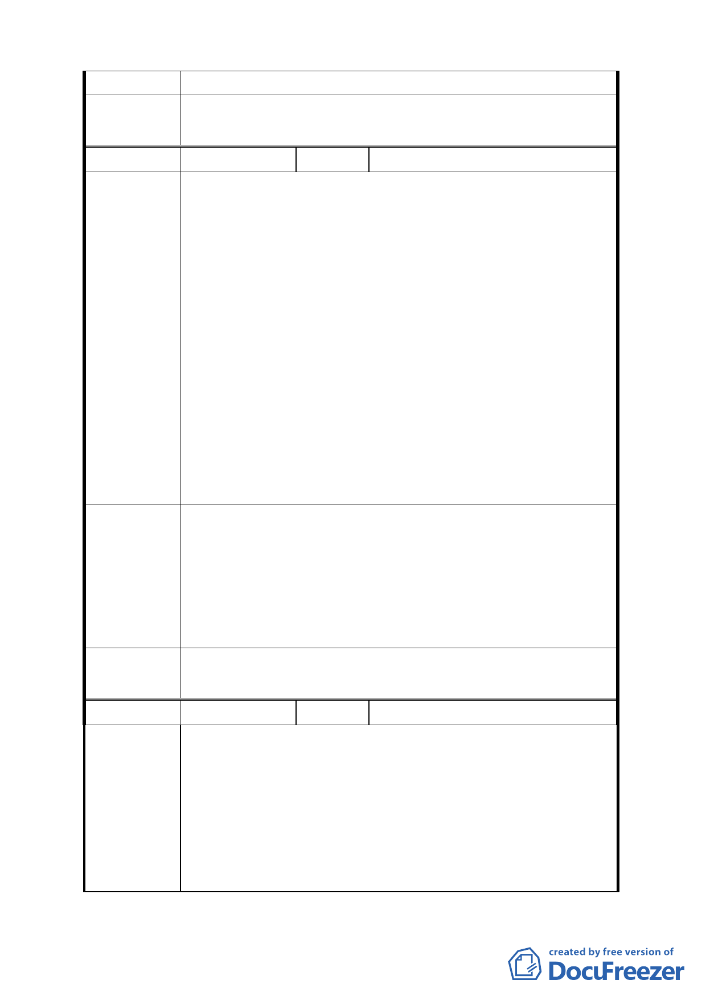

畫，明列於該都市計畫書中。
委員會議
決議
同編號 1。
編號
１７
陳情人 天祥小吃店
一、依都市計畫書【陸、變更計畫內容】內【二、土地使用
分區管制】所述，溫泉產業特定專用區內土地及建築物
得為各所列組別使用，其中包含第 22 組餐飲業，規定
餐飲用途營業面積不得大於溫泉相關項目，並非合理之
比例，建議以現況之用餐與使用溫泉浴室之遊客比例加
以調整。
陳情理由
二、北投溫泉為臺北市特有之天然資源，應永續利用珍貴的
溫泉資源及提升溫泉產業品質。
三、依都市計畫書【陸、變更計畫內容】內【四、都市設計
準則】的（三）水岸空間第一條規定：維持磺溪溪濱步
道串聯的順暢性，臨磺溪水岸之建築物須與水岸保持距
離 5 公尺以上的退縮，其中至少留設 3 公尺作為步道或
腳踏車道使用，2 公尺作為綠化植栽或原有地貌保留
帶。
建議辦法
一、目前使用溫泉浴室與餐飲用途面積（不包括廚房）面積
約為 1:1.5，因此建議比例為 1:1.5 較為合理。
二、作為溫泉文化展示空間部分，應不計入容積率。
三、建議本條增加敘明：若申請之基地範圍內，磺溪溪濱步
道並無經過基地範圍，得不適用此條，可不與水岸保持
5 公尺以上之退縮建築距離。
委員會議
決議
同編號 1。
編號
18 陳情人 臺北市溫泉發展協會
有關會勘行義路一小段四九號溫泉產業專區是否增列旅館
業一事，本會並無贊成或反對權利,但在評估是否增列之際，
請委員及政府先考量下列法律及市場等相關條件：
陳情理由 一、開放地目是否合法: 開放區域是否均符合都市計畫法、
建築技術規則、山坡地管制法等相關規定。
二、開放區段是否符合環保、水土保持相關法令: 開放區域
是否能符合環保、水土保持相關法令。
15